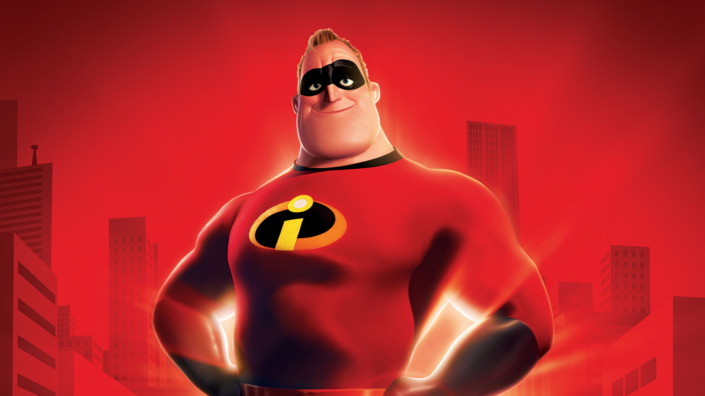
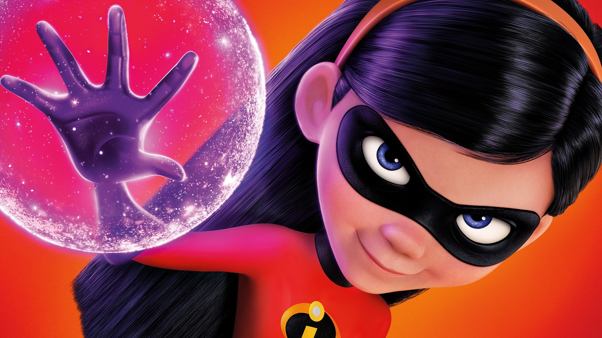
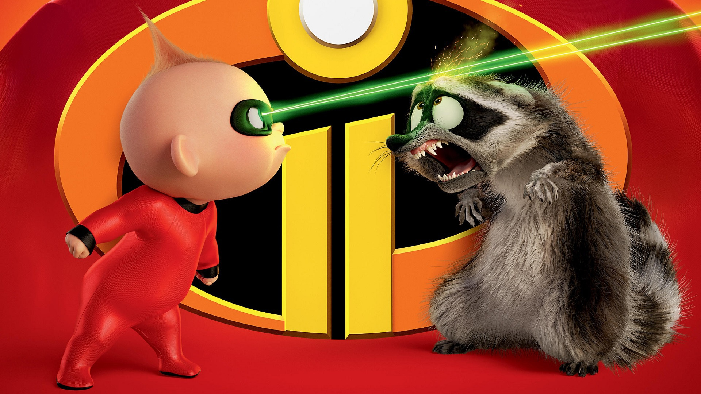

Mr Incredible
Mr. Incredible, also known as Bob Parr, is a superhero with superhuman strength, durability, and a commitment to justice. He is the father and leader of the Incredibles family, balancing his desire to save the world with caring for his wife and three children.

Elastic Girl
Helen Parr, also known as Elastigirl, is a superhero with the ability to stretch and contort her body to extreme lengths and shapes. She is married to Mr. Incredible and is the mother of Violet, Dash, and Jack-Jack, balancing heroics with her role as a caring, resourceful mom.

Violet Parr
Violet Parr is the shy, introverted eldest child who struggles with fitting in as a teenager while secretly mastering her superpowers of invisibility and creating force fields. Over the course of the film, she grows more confident, emerging as a brave and essential member of her superhero family.

Dash Parr
Dash Parr is the energetic ten-year-old son of Bob and Helen Parr, whose superpower is incredible speed. He is competitive, mischievous, and eager to use his abilities, often struggling with the need to keep his powers hidden from the public.

Jack Parr
Jack-Jack Parr is the baby of the family initially thought to have no powers, but he reveals a vast array of superhuman abilities including shapeshifting and other powers, making him potentially the most powerful in the Parr household.